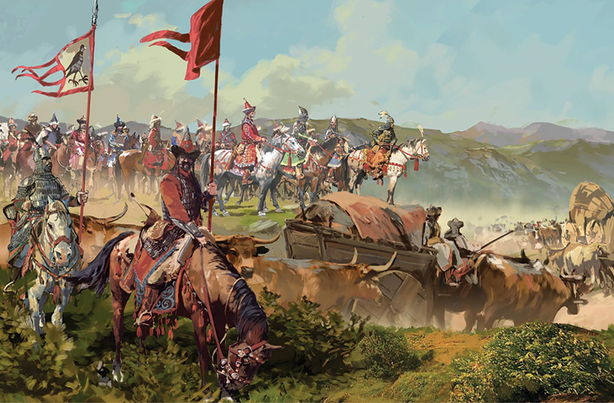

Forrásaink nem egységesek a magyar bejövetel keltezése tekintetében. A 19. század végére egy 895-ös évszám vált elfogadottá. Csakhogy 862-ben és 881-ben már frank uralom alatti területeket támadtak magyar seregek a Kárpát-medencében. Ezért szükséges a honfoglalás időrendjét felülbírálni, és arra gondolni, hogy a 9. század közepére a Magyar Nagyfejedelemség népe legalább részben átköltözött a Kárpát-medencébe, mert innen jobban figyelemmel kísérhette a frank területek politikai fejleményeit, mint Etelközből. A honfoglalást így 862-895 közé érdemes keltezni, és azt egy előre eltervezett, hosszan tartó folyamatként kell tekinteni.
A sorsdöntő jelentőségű magyar szállásváltás sok részletét a feledés homálya borítja. Milyen útvonalon keresztül jöttek be a honfoglalók? Anonymus északkelet felől, a Vereckei-hágón át vezeti be a magyarokat, krónikáink viszont Erdélyen keresztül történt beköltözésről írnak. Mindkét hagyománynak igaza lehet, sőt még a Száva és az Al-Duna felől is érkezhettek be eleink új hazájukba. Egyvalamiben egyezik meg az anonymusi és a krónikás hagyomány: az Álmos és Árpád közötti hatalomváltás már a Kárpát-medencében ment végbe. Álmos talán már 894-ben vagy azelőtt meghalt (valószínűleg Erdélyben), mert Árpád seregei azt a morva Szvatopluk fejedelmet győzték le (fehér ló mondája), aki 894-ben meghalt. Árpádnak így mintegy másfél évtizednyi uralkodás adatott 907-ben bekövetkezett haláláig. E küzdelmes és győzelmes évek alatt bevégezte azt, amit apja elkezdett. A magyar honfoglalás ilyenformán Álmos és Árpád együttes érdeme.
A 9-10. század fordulóján sokasodó nyugati irányú magyar támadások már a berendezkedést biztosították. Már ekkor megfigyelhető, hogy a magyarok saját politikai érdekeik szerint avatkoztak közbe egyik vagy másik küzdő fél oldalán, illetve indítottak hadjáratokat. 892-ben Arnulf keleti frank császár oldalán harcoltak a morvák ellen, de 894-ben már Arnulf ellensége, Szvatopluk morva fejedelem pártját fogták. 895-ben egy magyar-bizánci megegyezés eredményeképpen Árpád fia, Levente vezetett hadat a bolgárok ellen. (A 895-ös besenyő támadás valószínűleg meg sem történt, hanem egy korábbi magyar-besenyő háborút kelteztek arra az időszakra Bizáncban, hogy magyarázzák, miért élnek besenyők a magyarok egykori földjén.) 899-ben Arnulf frank császár kérésére Észak-Itáliára támadtak a magyarok.
Katt az oldal elejéhez--->Támadások